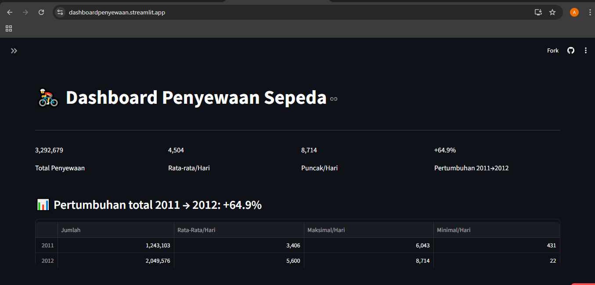
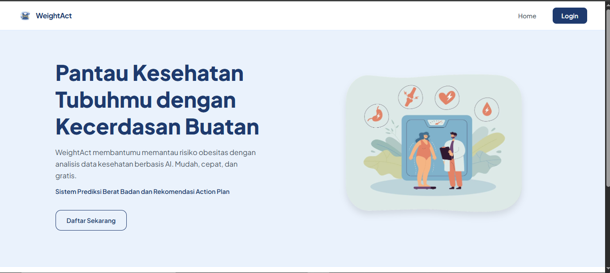
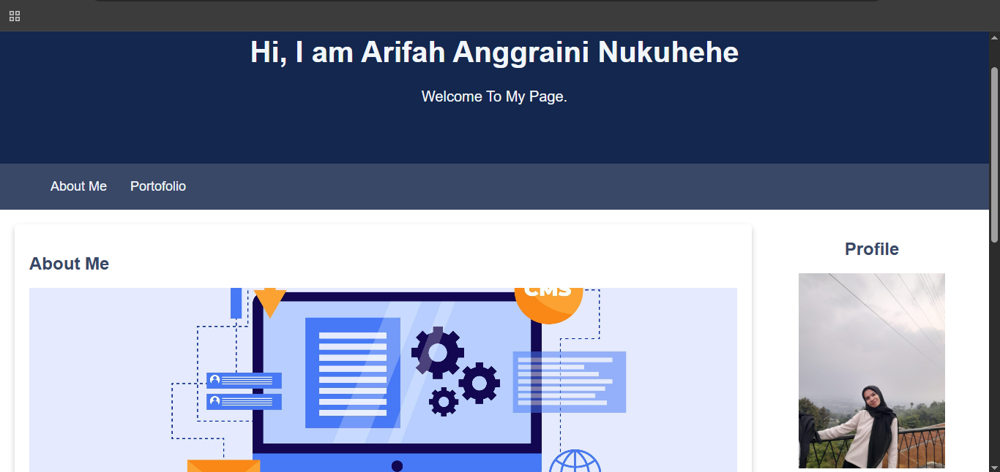

Data Science
Python, Pandas, NumPy, SQL, data cleaning, EDA, and data visualization.
INFORMATICS STUDENT · DATA SCIENCE ENTHUSIAST
An Informatics student passionate about data analysis, machine learning, and web development. I enjoy learning new technologies and building projects that solve real-world problems.
Exploring the intersection of data, technology, and meaningful solutions.
GET TO KNOW ME
I am an Informatics student with a growing interest in Data Science and web development. My interest in data grew through my Data Mining course and hands-on project experience.
I completed the Data Science learning path in Coding Camp 2026 by DBS Foundation, where I explored data analysis, data visualization, web scraping, and machine learning fundamentals.
I am eager to keep improving my technical skills, learn from real-world challenges, and contribute to projects that turn data into useful insights.
Exploring data and discovering insights.
Learning to build predictive models.
Building useful and accessible websites.
WHAT I WORK WITH
Technologies and tools I have explored through coursework and projects.
Python, Pandas, NumPy, SQL, data cleaning, EDA, and data visualization.
Scikit-learn, model training, classification, and model evaluation fundamentals.
HTML, CSS, JavaScript, responsive layouts, and website development fundamentals.
Google Colab, Jupyter Notebook, Git, GitHub, and Streamlit.
SOME THINGS I'VE BUILT
A selection of projects from my learning journey.

DATA ANALYSISAn exploratory data analysis project focused on bike rental patterns, trends, and factors related to rental demand. The results are presented through an interactive dashboard.

MACHINE LEARNINGA capstone project that combines weight status classification with personalized action-plan recommendations to help users understand their results and possible next steps.

WEB DEVELOPMENTA website developed as part of my university coursework, where I applied programming concepts and practiced building a functional web-based application.
LEARNING & DEVELOPMENT
2026
Completed an intensive Data Science learning program involving self-study modules, technical instructor-led sessions, soft skills training, and a collaborative capstone project.
2023 – Present
Studying programming, databases, data mining, software development, and other fundamental topics in Informatics.
LET'S CONNECT
I'm always open to learning, collaborating, and exploring opportunities in Data Science and technology.